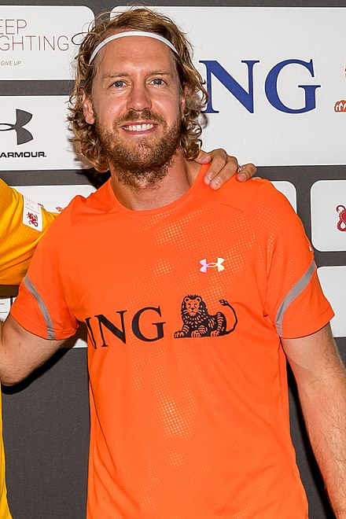

Sebastian Vettel (German pronunciation: [zeˈbasti̯a(ː)n ˈfɛtl̩] (listen); born 3 July 1987[3]) is a German racing driver who competed in Formula One from 2007 to 2022 for BMW Sauber, Toro Rosso, Red Bull, Ferrari, and Aston Martin. Vettel is one of the most successful drivers in Formula One history and has won four World Drivers' Championship titles, which he won consecutively from 2010 to 2013. Vettel holds the record for being the youngest World Champion in Formula One. He also has the third-most race victories (53) and podium finishes (122), and fourth-most pole positions (57).[4][5][6]
|  | ||||||||
|
Vettel in 2018 |
||||||||
| Born | 3 July 1987, Heppenheim, Germany | |
| Nationality | German | |
| Active Years | 2007-2022 |
Vettel started his Formula One career as a test driver for BMW Sauber in 2006, making a one-off racing appearance in 2007. As part of the Red Bull Junior Team, Vettel appeared for Toro Rosso later that year and was kept as a full-time driver for 2008, where he scored a victory in the Italian Grand Prix to become the then-youngest race winner. Vettel was promoted to Red Bull in 2009. With Red Bull, Vettel won four consecutive titles from 2010 to 2013, the first of which made him the sport's youngest World Champion. In 2013, he set the record for the most consecutive race wins with nine.[7] Vettel signed for Ferrari for 2015 replacing Fernando Alonso and became Mercedes' and Lewis Hamilton's closest challenger in two title fights in 2017 and 2018, although he finished both years as runner-up. He parted ways with Ferrari at the end of the 2020 season to race with Aston Martin for the 2021 and 2022 seasons, before retiring from Formula One at the end of the 2022 season.[8]
Early and personal life
Vettel was born on 3 July 1987 in Heppenheim, West Germany,[3] to Norbert and Heike Vettel. He has one younger brother, Fabian, a racing driver, and two older sisters: Melanie, a dental technician, and Stefanie, a physiotherapist for disabled children.[9] Vettel suggested in an interview that he was "terrible" at school, but he passed his Abitur at Heppenheim's Starkenburg-Gymnasium [de] with a respectable grade.[10][11] His childhood heroes were "The three Michaels": Michael Schumacher, Michael Jordan and Michael Jackson. He mentioned that he wanted to be a singer like Jackson, but realised that he did not have the voice.[12] Vettel is also a fan of the Beatles, collecting several records, including Abbey Road and his favourite song being "Drive My Car". In an interview on Top Gear, he stated that he is a fan of British comedy such as Little Britain and Monty Python's Life of Brian. Vettel lives in Thurgovia, Switzerland, amongst other racing drivers and is a fan of German football team Eintracht Frankfurt.[13] Vettel has described himself as competitive, private and impatient. He also appeared in advertisements for Head & Shoulders,[14] and provided the voice of character Sebastian Schnell in the German dub of the 2011 film Cars 2,[15] and a voice command assistant in the German and Italian dubs of the 2017 film Cars 3.[16] Vettel married childhood friend Hanna Prater at a private ceremony in early 2019,[17] and they have three children.[18][19][20] In 2016, Forbes estimated that his annual income was $41 million.[21] Kimi Räikkönen, his teammate from 2015 to 2018, is a close friend.[22] Besides his native German, Vettel speaks English, French, Finnish and Italian.[23][24] In July 2022, he created his Instagram account,[25] having long eschewed social media.[26] Vettel's first Instagram post was to announce his retirement from Formula One at the end of the 2022 season.[27] On 31 May 2023, Vettel announced his involvement with the Germany SailGP Team, as co-owner of the team alongside Thomas Riedel.[28]
Early career
Vettel began karting at the age of three, and began racing in karts series in 1995 at the age of eight. He was accepted into the Red Bull Junior Team in 1998,[29] and won various titles, such as the Junior Monaco Kart Cup in 2001. Vettel was promoted to open-wheel cars in 2003, and was given a chance by Derrick Walker to test a Reynard Motorsport Champ Car in a two-day private test at the Homestead–Miami Speedway.[30] A year later, he won the 2004 Formula BMW ADAC championship with 18 victories from 20 races.[31] Vettel drove for ASL Mücke Motorsport in the 2005 Formula 3 Euro Series. He was placed fifth in the final standings with 63 points and won the Rookie Cup. He tested for the Williams Formula One team later that year as a reward for his Formula BMW success. Vettel then went on to test for the BMW Sauber Formula One team.[32][33]
Vettel driving at a F3 Euroseries demonstration event in 2006
Vettel driving at a F3 Euroseries demonstration event in 2006 Vettel was promoted to test driver for BMW Sauber in 2006, and participated in the 2006 Formula 3 Euro Series, finishing as runner-up.[34] He also competed in the 2006 Formula Renault 3.5 Series, where he finished first and second at Misano in his first two races. In the next round at Spa-Francorchamps, his finger was almost sliced off by flying debris following an accident, and he was expected to be out for several weeks.[35] Nevertheless, he managed to compete in the 2006 Masters of Formula 3 at Zandvoort the following weekend, where he finished in sixth place.[36] Vettel competed in the 2007 Formula Renault 3.5 Series, and took his first win at the Nürburgring. He led the championship when he was called up permanently by the BMW Sauber Formula One team.[37]